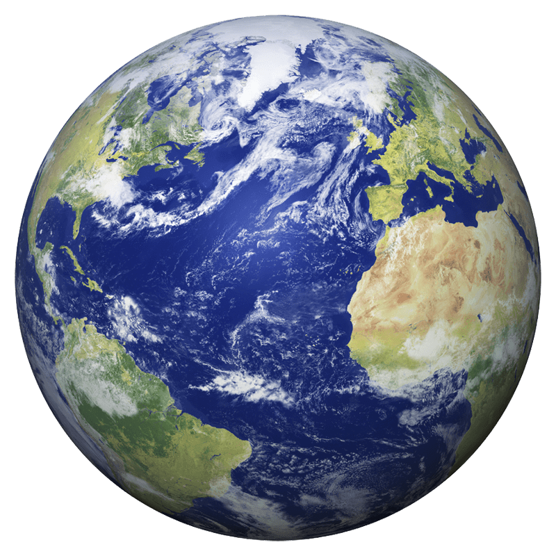

Mercury is the first planet from the Sun and the smallest in the Solar System. It is
a terrestrial planet with a heavily cratered surface due to overlapping impact
events. Despite being the smallest planet in the Solar System, Mercury is dense
enough to have roughly the same surface gravity as Mars.
Venus
Venus is the second planet from the Sun. It is a rocky planet with the densest
atmosphere of all the rocky bodies in the Solar System, and the only one with a mass
and size that is close to that of its orbital neighbour Earth.It is the third
brightest object in Earth's sky after the Moon and the Sun.

Earth
Earth is the third planet from the Sun and the only astronomical object known to
harbor life.Earth belongs to the terrestrial planets and is the largest of these
planets in the solar system. The earth is sometimes called the world.
Mars
Mars is the fourth planet and the furthest terrestrial planet from the Sun.The
reddish color of its surface is due to finely grained dust in the soil, giving it
the nickname "the Red Planet".Mars's radius is second smallest among the planets in
the Solar System.
Jupiter
Jupiter is the fifth planet from the Sun and the largest in the Solar System.It is a
gas giant with a mass more than two and a half times that of all the other planets
in the Solar System combined. And Jupiter was the first planet to form.
Saturn
Saturn is the sixth planet from the Sun and the second-largest in the Solar System,
after Jupiter. It is a gas giant with an average radius of about nine-and-a-half
times that of Earth.It has only one-eighth the average density of Earth, but is over
95 times more massive.
Uranus
Uranus is the seventh planet from the Sun. It is a gaseous cyan-coloured ice giant.
Most of the planet is made of water, ammonia, and methane in a supercritical phase
of matter, which in astronomy is called 'ice' or volatiles.
Neptune
Neptune is the eighth and farthest planet from the Sun. It is the fourth-largest
planet in the Solar System by diameter, the third-most-massive planet, and the
densest giant planet. It is 17 times the mass of Earth. Neptune is denser and
physically smaller than Uranus because its greater mass causes more gravitational
compression of its atmosphere.
Pluto
Pluto is a dwarf planet in the Kuiper belt, a ring of bodies beyond the orbit of
Neptune. It is the ninth-largest and tenth-most-massive known object to directly
orbit the Sun.Pluto is made primarily of ice and rock and is much smaller than the
inner planets.